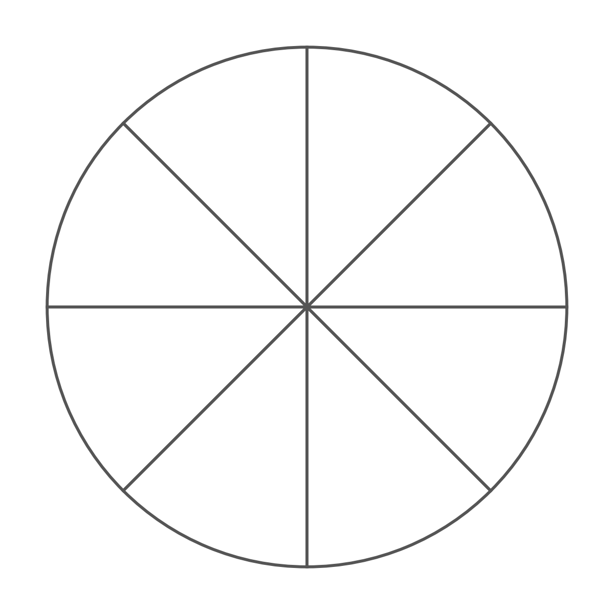

Objectives
- Multiply fractions
- Multiply mixed numbers by rewriting them as improper fractions
- Divide fractions by multiplying by the reciprocal
Warm-Up
1. What is half of a half?
2. What happens when you multiply two positive numbers that are both less than 1?
The product is smaller than either one.
3. If you divide 1 by 12, is the answer bigger or smaller?
1.4.1Multiplying Fractions
Multiplying by a fraction means finding a
part of a part.
- Multiply the numerators together.
- Multiply the denominators together.
- Then simplify if you can.
EX 1. 14 × 12 —
one fourth of one half. Shade one half, then shade one fourth of
that half. Then use the rule.

14 × 12 = 1 × 14 × 2 = 18
Multiplying a Whole Number by a Fraction
No denominator? Put a 1 underneath it.
EX 3. 3 × 25
EX 4. 5 × 34
3 × 25 = 31 × 25 = 65 = 115
Simplifying After You Multiply
EX 5. 23 × 94 —
multiply first, then cancel common factors.
23 × 94 = 2 × 93 × 4 = ______ =
32 = 112
2 × 93 × 4 = 1812, and 18 and 12 share a GCF of 6.
Shortcut
If you
cancel common factors before you multiply, you get to skip a step.
EX 6. 89 × 34 — cancel first.
Cancel 8 with 4 and 3 with 9: 23 × 11 = 23
1.4.2Multiplying Mixed Numbers
To turn a mixed number into an
improper fraction:
- Multiply the whole number by the denominator.
- Add the numerator.
- Keep the same denominator.
To go back: divide the numerator by the denominator, and the remainder becomes the new numerator.
EX 7. 423 × 56
Convert: 4 × 3 = 12, then + 2 = 14,
so 423 = 143
Multiply: 143 × 56 = 7018 = 359
Back to a mixed number: 389
EX 8. 214 × 45
94 × 45 = 3620 = 95 = 145
EX 9. A recipe for 12 needs 312 cups of flour.
You only want half of it. How much flour?
EX 10. 323 × 412
113 × 92 = 996 = 332 = 1612
1.4.3Division & Reciprocals
The
reciprocal of a fraction is the fraction
flipped upside down.
reciprocal of 34 = 43
reciprocal of 5 = 15
reciprocal of 0 = none — undefined
Remember — Keep, Change, Flip
1. Keep the first fraction.
2. Change ÷ to ×.
3. Flip the second fraction.
EX 11. 23 ÷ 14 —
this asks: how many fourths fit inside 23?
23 ÷ 14 = 23 × ______ = 83 = 223
The flipped fraction is 41.
Gotcha
Zero has
no reciprocal. And with mixed numbers, convert to an
improper fraction
before you flip.
1.4 Multiplying & Dividing Fractions — Practice
Practice
Multiply and Divide Fractions
1. Multiply.
a. 25 × 34 = 310
b. 3 × 47 = 127 = 157
c. 56 × 12 = 512
d. 38 × 49 = 16
2. Multiply (mixed numbers).
a. 112 × 23 = 32 × 23 = 1
b. 225 × 3 = 365 = 715
c. 134 × 23 = 76 = 116
d. 313 × 214 = 103 × 94 = 9012 = 712
3. Divide.
a. 34 ÷ 12 = 32 = 112
b. 2 ÷ 25 = 5
c. 56 ÷ 13 = 52 = 212
d. 78 ÷ 78 = 1
Word Problems
4a. You have 34 of a pie. If everyone gets 18 of a pie,
how many people can you serve?
4b. A recipe calls for 23 cup of flour. You are making 12 of
the recipe. How much flour?
4c. A board is 6 feet long. Each shelf needs 34 of a foot.
How many shelves can you cut?
Challenge
5. Two fractions multiply to give exactly 38. One of them is 34.
What is the other?
6. Pancakes need 214 cups of sugar per batch. You have exactly 9 cups.
What is the greatest number of full batches?
9 ÷ 214 = 9 ÷ 94 = 9 × 49 = 4 batches, with nothing left over.